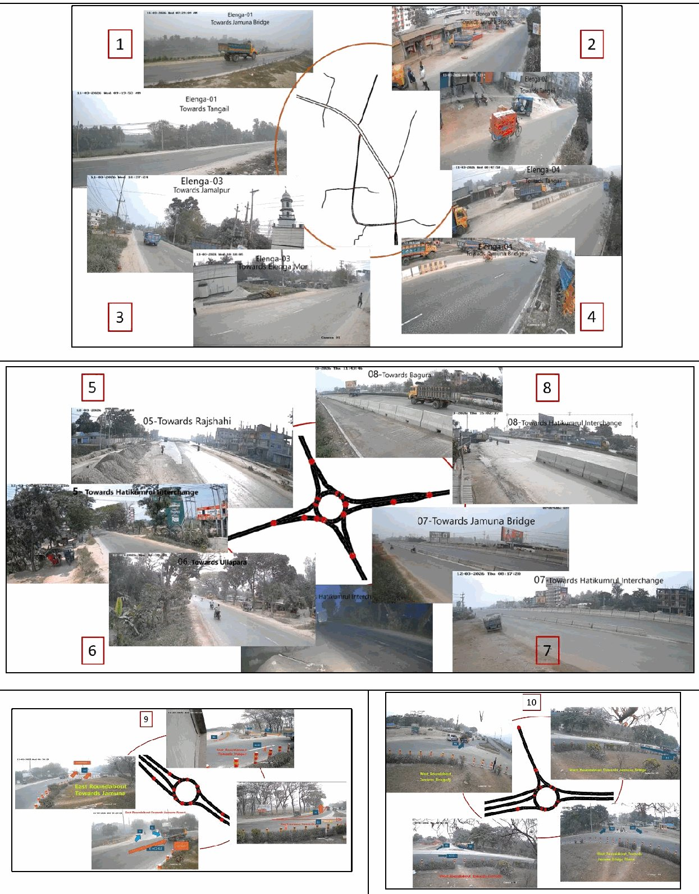
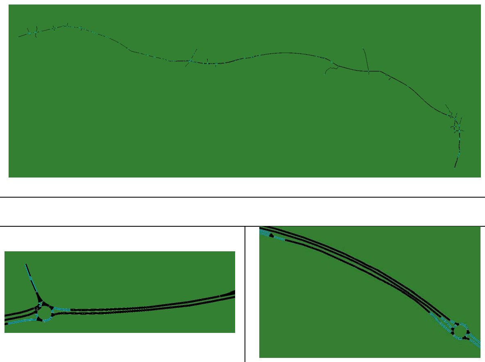
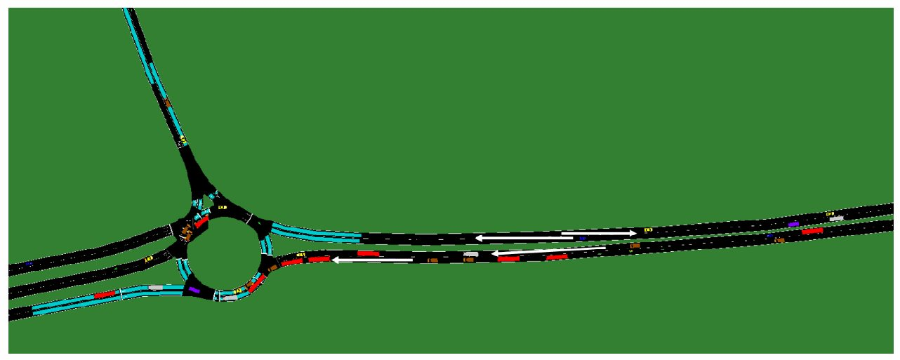
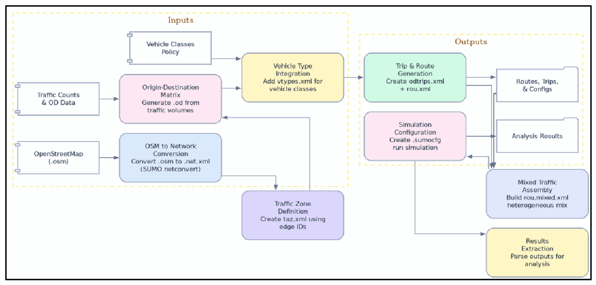
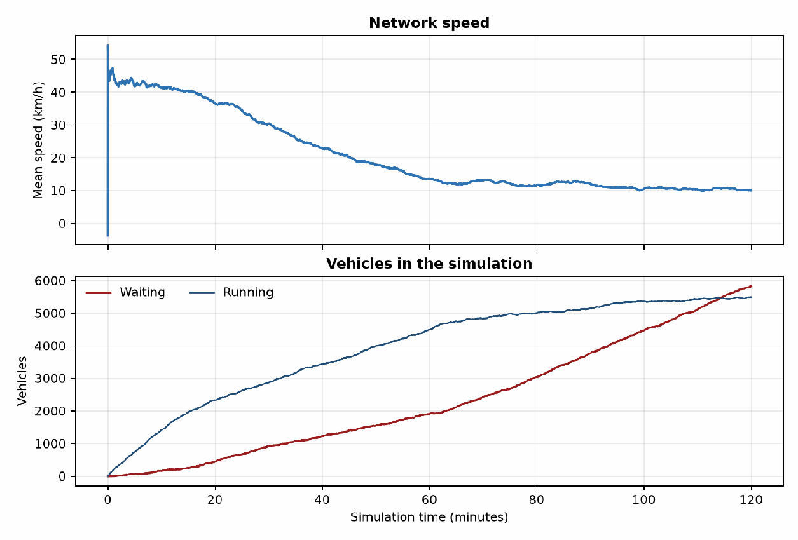
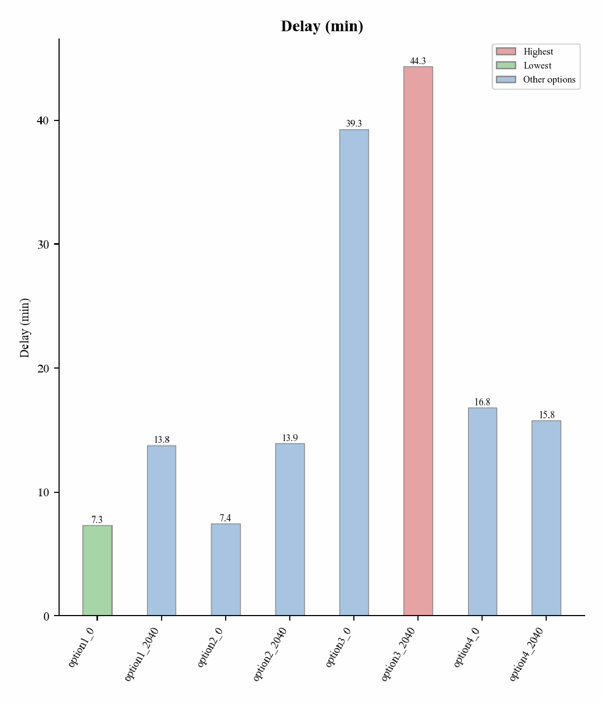
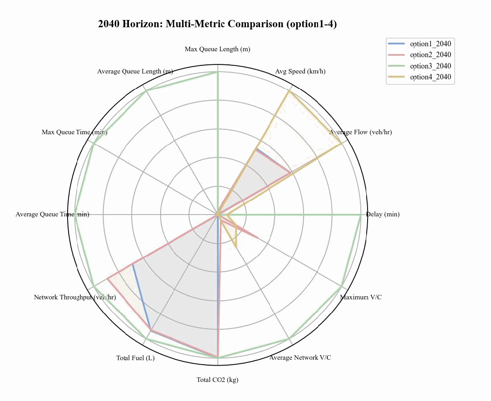
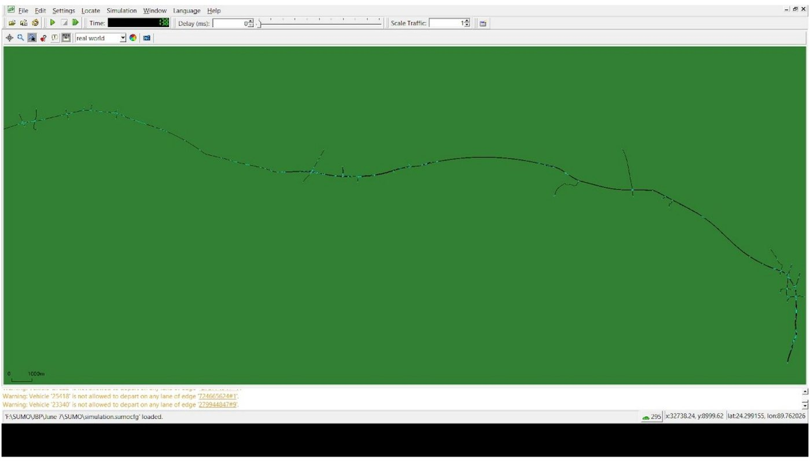

Professional project
Jamuna Bridge Deck Renovation and Future Annex Bridge: Traffic Micro-Simulation
October 2025 – present · Bangladesh Bridge Authority
| Project | Feasibility Study and Detailed Design-Drawings of Deck Renovation and Associated Works for Appropriate Use of Jamuna Bridge’s Existing Rail Lane and Pre-Feasibility Study for Future Annex Bridge |
|---|---|
| Client | Bangladesh Bridge Authority (BBA) |
| Consultant | IUT–DevConsultants Limited Joint Venture; advisory review by BUET |
| Role | Project Operations Associate and Research Assistant: development and analysis of the micro-simulation |
| Tools | SUMO 1.23, TraCI, Python, OD and classified count surveys, license-plate-based tracking |
Overview
The Jamuna Multipurpose Bridge is one of the most important east–west links in Bangladesh’s national road network. The rail track on the bridge deck is no longer in operation, and removing it frees 3.505 m of deck width for road traffic. The Bangladesh Bridge Authority commissioned a feasibility study and detailed design for the deck renovation, with a pre-feasibility study for a future annex bridge. The Islamic University of Technology, in joint venture with DevConsultants Limited, is the consultant, and an expert team from BUET provides advisory review.
The traffic question was which lane configuration should be adopted once the rail track is removed, and how each option would perform under present-day traffic and forecast 2040 demand. I developed and ran the microscopic traffic simulation used to answer it.
My Role
- Built the SUMO network for the bridge and its approach corridors: the East and West Roundabouts, Hatikamrul and Elenga.
- Prepared simulation demand from the classified counts and origin–destination surveys, including license-plate-based vehicle tracking from the survey video.
- Configured car-following, lane-changing and vehicle parameters for local driving behaviour, and ran and analysed all scenarios.
- Managed technical coordination between the data collection team and the engineering design team.
Traffic Data
Continuous 24-hour high-definition video (suitable for Automatic License Plate Recognition by day and night) and roadside origin–destination interviews were collected at ten strategic locations around the Elenga and Hatikamrul intersections and the East and West Roundabouts. OD interviews ran for 16 hours at the midblock points, synchronised with the video counts, with a target sample of 10% of directional traffic or at least 500 vehicles per location. They were recorded digitally in Kobo Toolbox with license-plate photographs for validation. The most demanding period was Wednesday 9:00–11:00, when 28,992 vehicles were counted across the ten locations.


Alternatives Tested
Four alternatives were prepared with the Department of Civil Engineering, BUET, and each was simulated for the present day (suffix 0) and for 2040 demand.
| Option | Deck configuration |
|---|---|
| Option 1 | Four standard traffic lanes, properly divided, using the space freed by the rail track |
| Option 2 | Four traffic lanes with a dedicated emergency shoulder for breakdowns and emergency response |
| Option 3 | Conventional four-lane divided carriageway, all lanes permanently assigned to one direction |
| Option 4 | Four lanes with a reversible (tidal) lane that can be switched to the peak direction during festival surges |
Table 1. Lane-configuration alternatives.




Option 4 responds to a strongly directional festival demand. During the Eid-ul-Fitr peak about 29,594 vehicles travelled from the East Roundabout (Dhaka side) towards the West Roundabout, against about 558 in the opposite direction, a ratio of roughly 53:1.
Simulation Model
The model was built in SUMO 1.23 following a seven-step process: project scope, data collection, base model development, error checking, comparison with field data, alternatives analysis and reporting. The network was imported from OpenStreetMap and converted with netconvert. Demand was generated from the OD matrix for each vehicle class, and routes and trips were assembled before the simulation configuration was run and the results parsed for analysis.


Default parameters were adjusted to reproduce local driving behaviour:
- Vehicle dimensions, desired and reduced speeds, accelerations and decelerations specific to each vehicle class.
- Car following with a standstill distance of 0.5 m, a 0.5 s headway, a 50 m maximum look-ahead and a 10% probability of momentary inattention.
- Lane changing with free lane selection, accepted deceleration of −1.5 m/s², a safety-distance reduction factor of 0.75 and a 120 s waiting time before diffusion. Lane-change look-back distances were reduced to 30 m, 10 m and 0.05 m (from typical developed-country values of 100 m, 50 m and 0.05 m) to reflect aggressive driving.
- Lateral clearance of 0.25 m at standstill and 0.75 m at 50 km/h, yield behaviour at unsignalised conflicts, 25% speed reduction near intersections and bus stops, and slow vehicles confined to the outer lanes.
- Invalid-path and trajectory checks, and ten runs per scenario with different random seeds.


Results
The eight option–year combinations were compared on twelve indicators: delay, average flow, average speed, maximum and average queue length, maximum and average queue time, network throughput, fuel consumption, CO2 emissions, and average and maximum volume-to-capacity ratio.
| Indicator | Best | Worst |
|---|---|---|
| Delay (min) | Option 1, present (7.31) | Option 3, 2040 (44.34) |
| Average speed (km/h) | Option 4, 2040 (43.45) | Option 3, 2040 (12.57) |
| Average flow (veh/h) | Option 4, 2040 (762.38) | Option 3, 2040 (162.51) |
| Maximum queue length (m) | Option 4, present (88.61) | Option 3, 2040 (3,585.27) |
| Average queue time (min) | Option 4, present (0.45) | Option 3, 2040 (18.61) |
| Total fuel (L) | Option 1, present (127,117.84) | Option 3, present (1,986,267.01) |
| Average network V/C | Option 4, present (0.10) | Option 3, 2040 (0.71) |
Table 2. Best and worst performing option–year combination for selected indicators.




Recommendation
The study recommended Option 1, a standard, permanently divided configuration with two lanes in each direction, as the everyday layout. It gave the lowest average delay (7.31 min at present-day volumes, about 83% lower than the worst case) and the lowest fuel consumption of all eight combinations. It also gives drivers, toll operations and enforcement the simplest and most predictable arrangement. Option 4 performed well on speed and queue measures under the simulated conditions. However, a reversible lane needs reliable lane control and carries a risk of driver confusion, and its benefit shrinks under balanced day-to-day demand. It was therefore recommended only as a supplementary, festival-specific measure for the Eid surge, not as the permanent configuration.


Source: Traffic Analysis Report for Jamuna Bridge Deck Renovation, IUT–DevConsultants Limited JV for the Bangladesh Bridge Authority, July 2026.